← MORYUNA’ya dön
Taş, ışık ve biraz atölye.
Bu sayfadaki ürün kareleri çalışan 3D sahneden alındı. Bileklik ve kolyede daha sakin bir mermer zemin, stüdyo ışığı, gerçek geometriye bağlı temas ve daha alçak ürün kamerası kullanılıyor.
Katalog örnekleri, güncel taş görünümü
On bir yuvarlak taşın katalog ve seçili parça görselleri mevcut natural-v3 görünümünden yeniden alındı. Güncelleme, sahnede kullanılan görünümü daha doğru temsil eden katalog örnekleri sunuyor. Malzeme algoritması, diğer 18 önizleme, parça adları ve eski tasarımların kayıtları korundu.
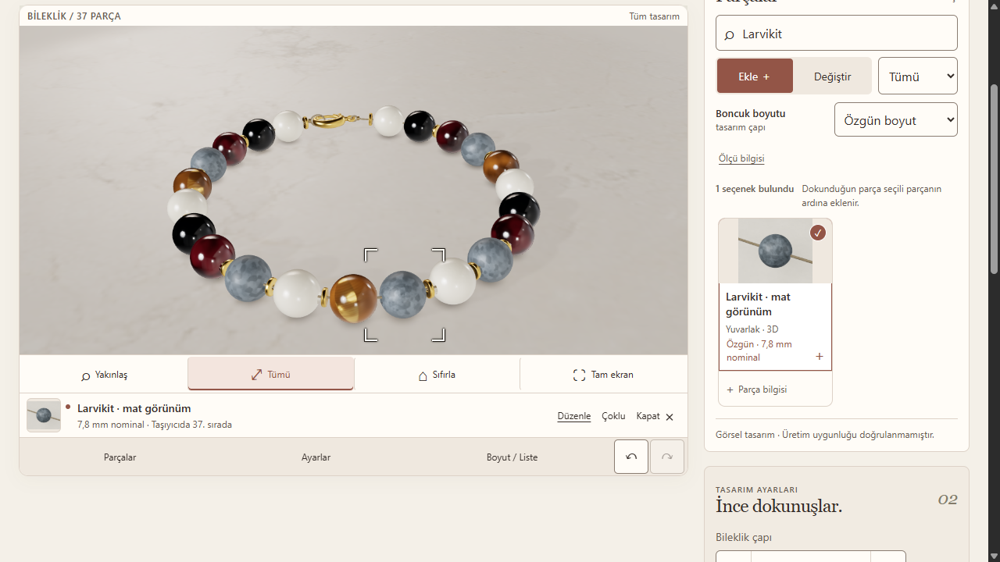
Masaüstü · 1280 × 720. Mat larvikit ekleme, seçme ve Geri Al akışı.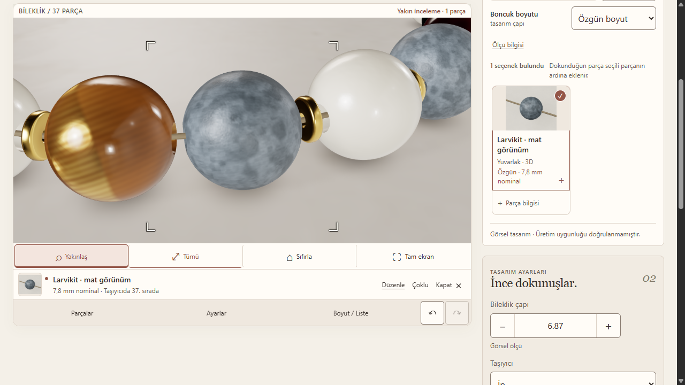
Seçili parçaya odaklanma · aynı çalışan arayüz.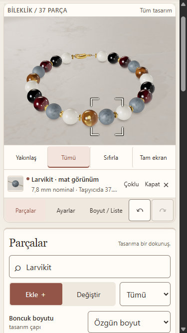
Mobil tarayıcı · 375 × 667. Fiziksel telefon denemesi değildir.Ekleme ve Geri Al sonrasında başlangıçtaki 36 parçalı deneme tasarımı aynı JSON içeriğiyle geri geldi. Tek renderer ve değişmeyen üç varlık yüklemesi gözlendi; konsol hatası kaydedilmedi. V64 arayüz kaydı, performans veya fiziksel cihaz ölçümü içermiyor.
Katalog örnekleri için bağımsız kabul, güncel görünümü temsil etme doğruluğuyla sınırlı. Ametistte ipin içeriden görünmesine benzeyen koyu çapraz bant doğal damar gibi okunabilir. Örnekler ürün fotoğrafı veya her kayıtlı parçanın birebir deseni değildir. İkon dosyaları toplam 1.189.637 bayttan 4.007.063 bayta çıktı; bu artış küçük simgede aynı oranda ayrıntı kazancı kanıtlamaz. Yeni inci ve parlak larvikit çalışmaları bu güncellemede yer almıyor; gerçekçilik hedefi sürüyor.
Bu arayüz kaydının kanıtı ve kaynağı
Arayüz ve Geri Al kaydı · 11 güncel / 18 korunan önizleme kaydı · Çekim, kaynak bağı ve görsel eşliği
Arayüz uygulama kaynağı: 8c6b759c2c4e4250d9e492b274bc103f6f225843. Taş örneklerinin temiz çekim kaynağı: 86eab430b0b970408754dc6ab7e601608e29b58e. Bu kimlikler yayın sürümü değildir; sunulan yayının kimliği yayın kaydında bulunur.
Çalışan ürünün içinden
Taşın içinde daha sakin bir doku
Aynı bileklik, aynı kamera ve ışık. Solda önceki taş görünümü, sağda yeni görünüm: larvikitin sert kamuflaj adacıkları daha iç içe mineral değişimlerine dönüşüyor. Tasarımın yalnız 21 taş görünümü alanı değiştirildi; bu kontrollü sürüm karşılaştırmasıdır.
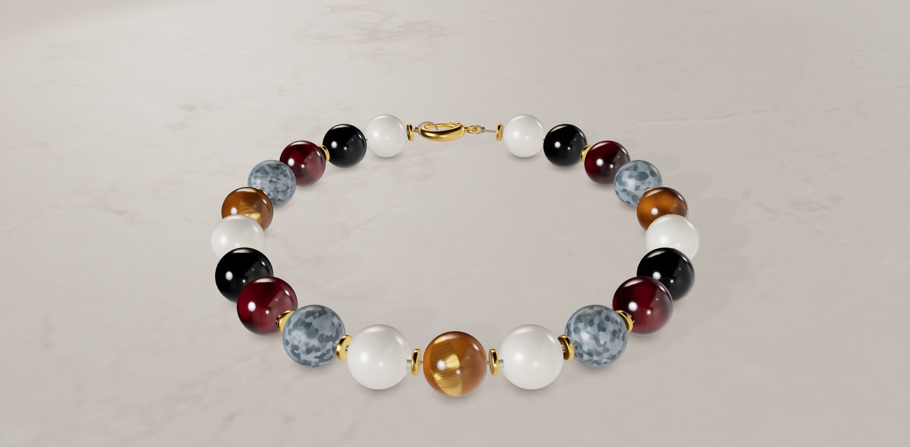
Önceki görünüm · natural-v2 Yeni görünüm · natural-v3
Yeni görünüm · natural-v3Önceki fotoğraf sahnesi çalışması
Soldaki kareler ilk çalışan fotoğraf sahnesi kontrol noktasından (V22), sağdakiler önceki yayının adayından (V30). Her çiftte tasarım, parça kimlikleri, kamera ve görüntü alanı aynı. Taş görünümü açıkça natural-v1 → natural-v2 değiştirildi. Bu çiftler çalışma başlamadan önceki canlı sürüm karşılaştırması değildir.
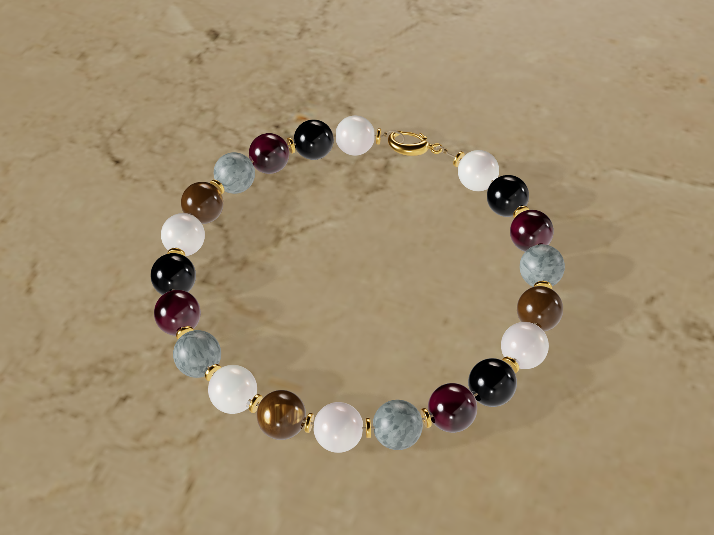
Bileklik · önce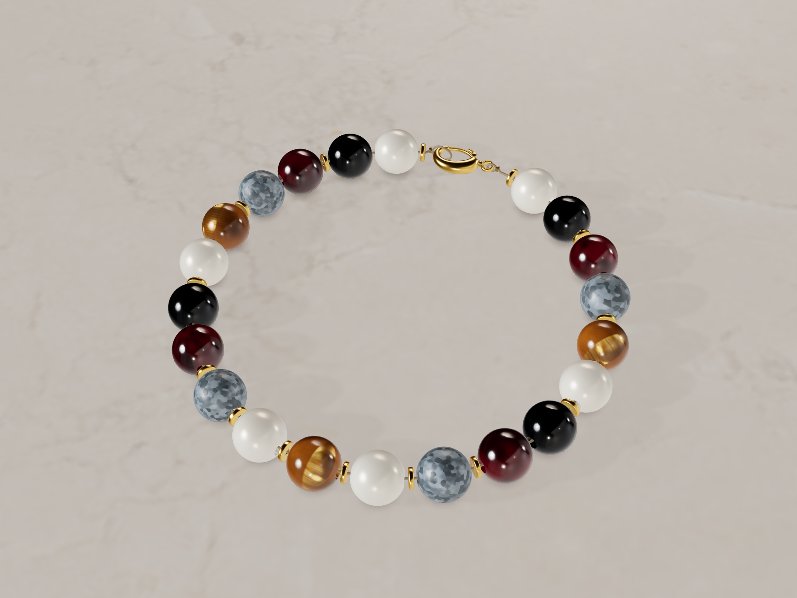
Bileklik · sonra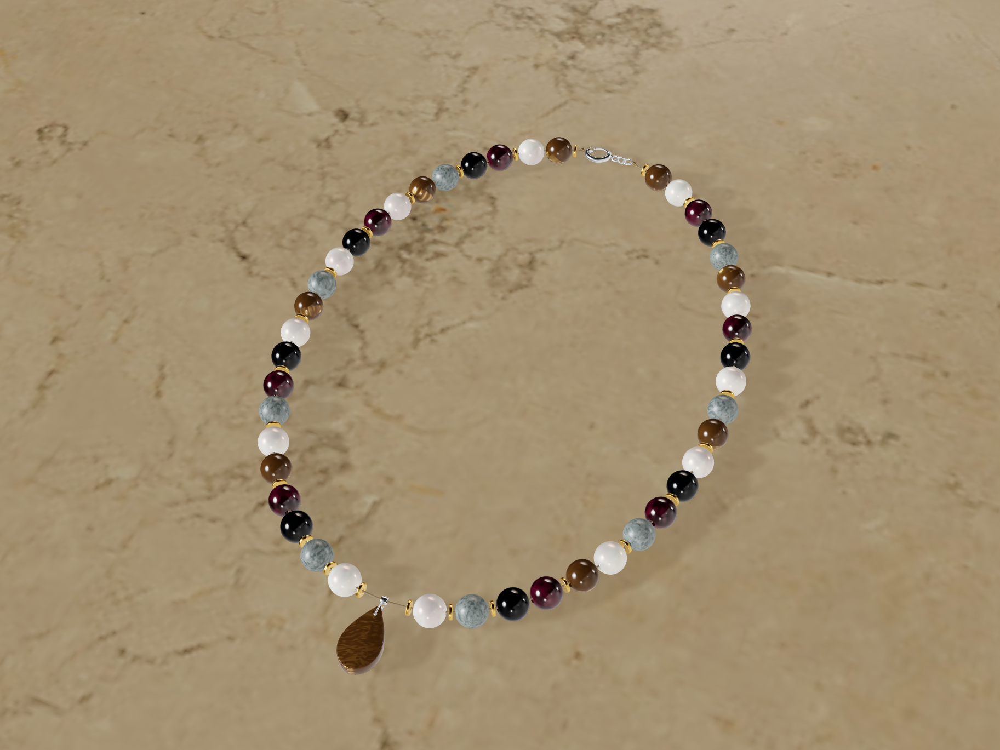
Kolye · önce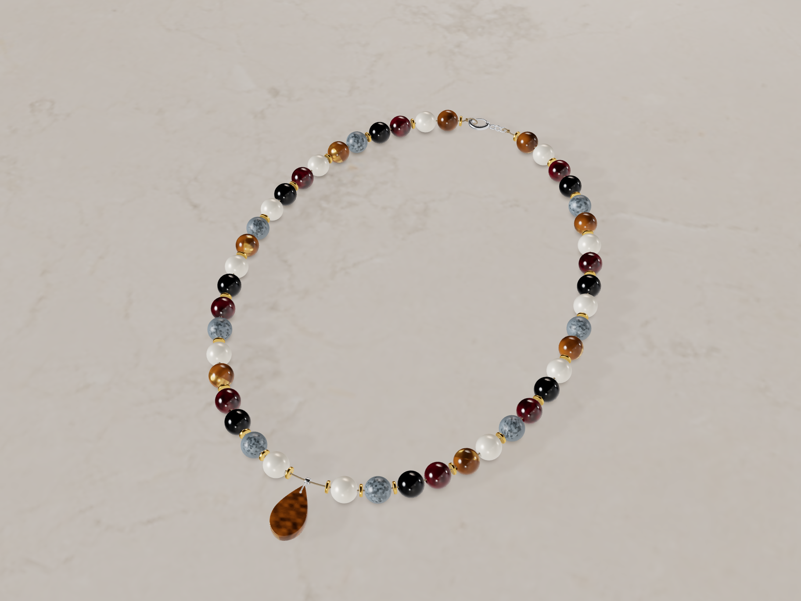
Kolye · sonraCepte de tasarımın yanında
Yeni taş görünümüyle 375 × 812 tarayıcı alanında bileklik, kolye ve genişletilmiş sahne. Parça kütüphanesine geçildiğinde 3D alan görünür kalıyor. Tam ekrandan çıkış, kamera sıfırlama ve klavye odağı kontrol edildi.
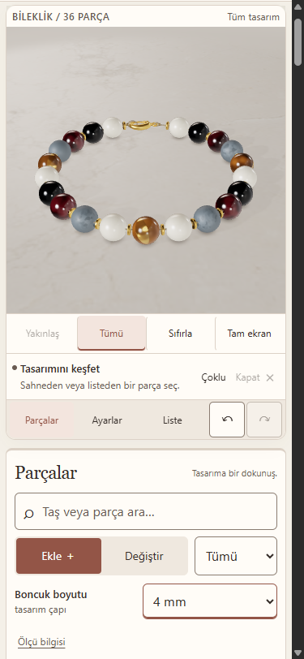
Bileklik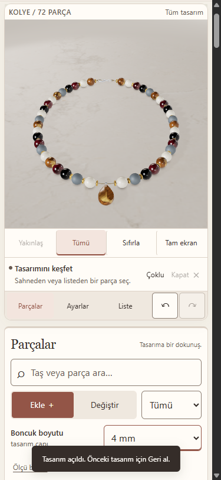
Kolye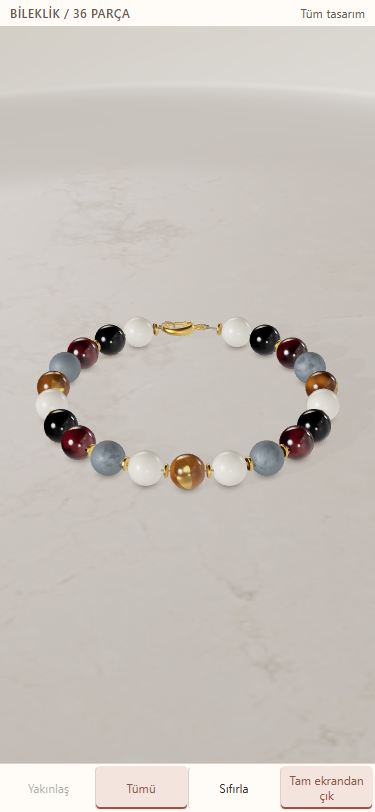
Tam ekranKaplan gözünün dönüşte değişen iç ışığı
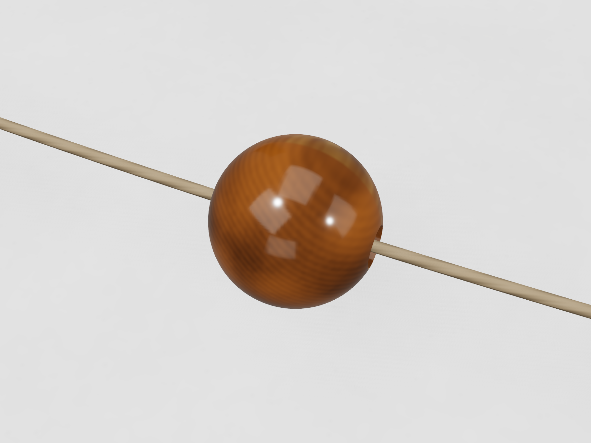
−30°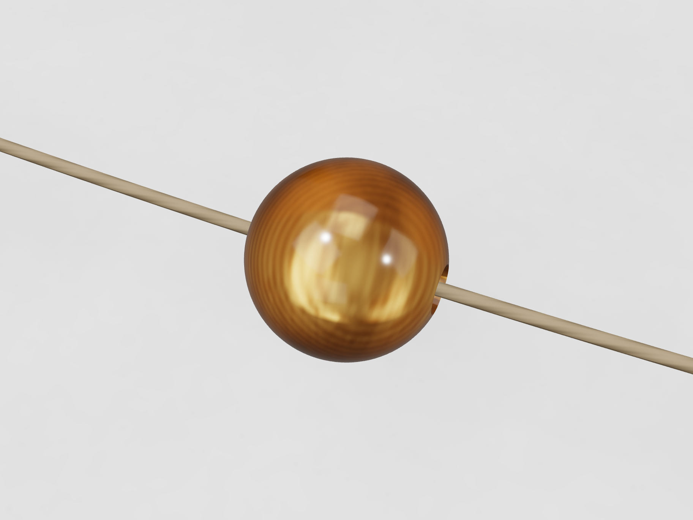
+30° · aynı parça kimliğiNereye geldik?
Bağımsız görsel inceleme yeni taş görünümünün bu geliştirme yayını için engel bulmadı. Konsept düzeyinde gerçekçilik hedefi henüz tamamlanmadı: larvikit yakın çekimde prosedürel okunuyor; inci ve granatın optiğinde geliştirme payı var. Bu sayfa son kalite kabulü iddiası taşımıyor.
V45'in kayıtlı kaynaklarında 499 uyumluluk testi ve 74 odaklı görünüm politikası testi geçti. Gerçek arayüzde eski ve karma sürümlü tasarımlar, görünüm yenileme, Geri Al, Yinele, 4–6–8 mm, çoğaltma ve kayıt açılışı doğrulandı. Eski tasarımların taş görünümü açılırken değişmiyor; yenileme açık bir kullanıcı eylemi. Tek renderer kullanılıyor. Önceki hareket, boşta kalma ve bağlam kurtarma ölçümleri pakette tarihsel kanıt olarak korunuyor. Fiziksel telefon ve renk kalibrasyonu yapılmadı.
Görsel hedef, bağımsız inceleme ve kaynak bilgisi
Aşağıdaki görsel üretilmiş konsepttir; çalışan 3D kanıtı değildir.
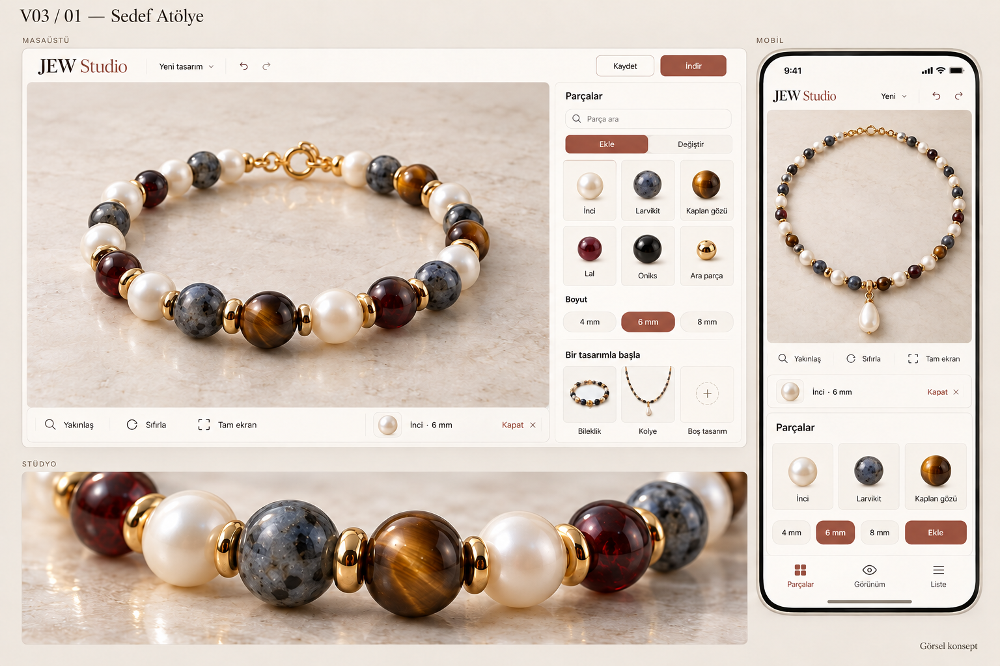
Görsel hedef · V03 AV45 taş görünümünün bağımsız görsel incelemesi · Önceki sahnenin incelemesi · Dosya hash’leri ve eşleştirme ölçümleri · Kanıt ve sınırlar
Korunan V45 ürün karelerinin temiz kaynağı: 2a9a3199f545abcbece96b44042fa26aa9f5be08. V64 arayüz kaynağı yukarıda ayrı belirtilmiştir. Tarihsel V22/V30 çiftlerinin kaynağı ve sınırları manifestte. Yayının tam main SHA bilgisi yayın kaydında. Görseller sentetik deneme tasarımlarına aittir. Üretici fotoğrafları ürün dokusu veya paket görseli olarak kopyalanmadı.